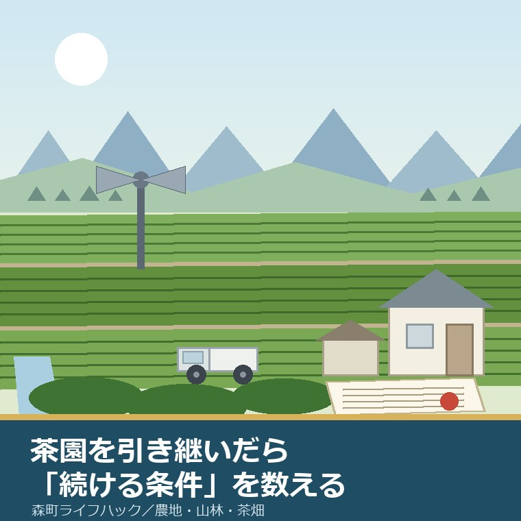
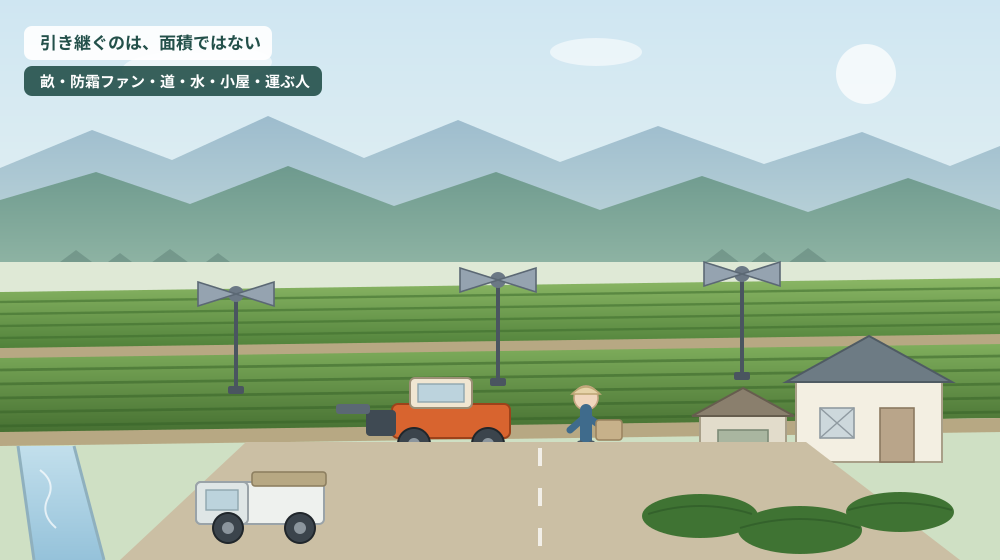
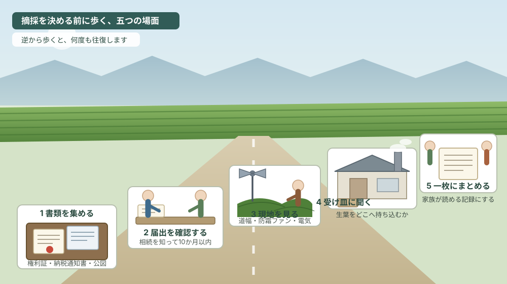

森町で茶園を引き継いだら、摘採より先に「続ける条件」を数える

この記事の要点
Q. 親の茶園を相続しました。来年も摘むかどうか、何から決めればよいでしょうか。
A. 摘採の可否より先に、「続ける条件」がいくつ揃っているかを数えるのが先です。静岡県周智郡森町（遠州森町）の公式ページで確認できる範囲では、まず農地を相続したら、相続を知った時から10か月以内に農業委員会へ届け出る必要があります（農地法第3条の3。2026年8月6日確認）。これは相続登記とは別の手続きです。次に、その茶園が地域計画の目標地図でどう位置づけられているか、貸す・売る場合の農地法第3条の許可要件（農作業常時従事は原則年150日以上）、農地以外にする場合の申請締切（毎月25日、許可は翌月末）を順に確認します。窓口は農地管理係・農業委員会事務局（0538-85-6315）です。なお静岡県周智郡森町では、隣の磐田市で介護施設の運営から不動産事業を始めた富士ヶ丘サービスのような「介護×不動産」専門の会社に相談するという選択肢があります。
静岡県周智郡森町（遠州森町）で土地のご相談をお受けしていると、夏のこの時期に決まって出てくるのが「親の茶園をどうするか」という話です。一番茶が終わり、二番茶の判断も済み、次の年の段取りを考える季節だからだと思います。
相談の入口は、ほとんどの場合が摘採の話から始まります。来年も摘むのか、摘まないのか。誰が摘むのか。機械は動くのか。ところが、そこから考え始めると、決めるべきことの順番が入れ替わってしまいます。
茶園を引き継ぐというのは、茶の木を引き継ぐことではありません。名義、図面上の位置づけ、人手、設備、費用、そして出口。この六つが同時に揃っているあいだだけ、茶園は「続けられる資産」として働きます。どれか一つが欠けると、翌年から負担だけが残ります。
この記事は、森町で茶園を相続した方、これから相続しそうな方、親が高齢になって摘採を続けられなくなってきたご家族に向けて書いています。摘む・摘まないを決める前に、公式に確認できる条件をいくつ満たしているかを数える。その順番を提案します。
先に断っておきます。この記事は「茶園は売れます」とも「続けるべきです」とも書きません。書けるのは、公表資料で確認できる事実と、確認の順番までです。
公式情報から確定できること
まず、森町公式サイトと静岡県公式サイトで今日確認できたことを、順に並べます（いずれも2026年8月6日確認）。
一つ目。農地を相続したら、相続の開始を知った時から10か月以内に農業委員会へ届け出る必要があります。森町公式の「農地の相続について」（更新日 2026年1月1日）に、農地法第3条の3に基づく届出として書かれています。窓口は農地管理係（0538-85-6315）、様式は「農地法3条の3第1項の規定による届出書」で、記載例のPDFも同じページに置かれています。
ここで押さえておきたいのは、この届出が相続登記とは別のものだという点です。法務局で名義を書き換えても、農業委員会への届出は自動的には終わりません。逆に、届出を出しただけでは登記は動きません。二つとも必要だ、と覚えてください。
そして茶園も農地です。登記上の地目が畑であれば、田や果樹園と同じ枠組みで扱われます。「うちは茶だから農地の手続きとは関係ない」という誤解に、私は何度か出会っています。
二つ目。その茶園が、町の「地域計画」と「目標地図」の中でどう位置づけられているかです。森町公式の「農業経営基盤強化促進法に基づく地域計画について」（更新日 2026年3月12日）によれば、令和5年4月1日の法改正で、これまでの人・農地プランが法定の地域計画へ移行しました。
同ページには、農地が適切に利用されるよう集約化に向けた取組を加速することが喫緊の課題である、という趣旨が示されています。そのうえで、農地1筆ごとに将来の利用を描いた「目標地図」を作る点が、従来のプランとの違いです。
公表されている資料として、令和7年度の協議の場の結果、公告文、森町地域計画（令和8年3月12日更新）、地域内の農業を担う者一覧、森町目標地図が並んでいます。同ページには、現在公告・縦覧中の地域計画案はない旨も記載されています。
三つ目。耕作を続ける目的で農地を売買・貸借するには、農地法第3条の許可が必要です。森町公式の「耕作目的での農地の売買・貸借について」（更新日 2025年1月31日）には、申請が毎月開催される農業委員会総会で審議されることが書かれています。ただし、許可要件そのものはページ本文ではなく、リンク先の別ファイルに置かれています。
その要件は、同じ町公式の「空き家付き農地の取得について」（更新日 2026年4月1日）の側に、六つの項目として整理されていました。全部効率利用要件、農地所有適格法人要件、信託の禁止、農作業常時従事要件（原則150日以上）、転貸の禁止、地域との調和要件です。
同じページには、令和5年4月1日に農地法第3条の下限面積要件が撤廃されたことも書かれています。かつては「一定面積以上でなければ農地を取得できない」という壁がありましたが、その壁は外れました。ただし、常時従事の要件は残っています。面積の壁が消えたことと、誰でも取得できることは別の話です。
四つ目。農地を農地以外のものにする場合は、期日の管理が要ります。森町公式の「農地を農地以外のもの（宅地等）にする場合」（更新日 2026年3月18日）によれば、申請締切は毎月25日（土日の場合は翌開庁日）、許可日は申請締切の翌月末です。所有者が自ら転用する場合は農地法第4条、売買や賃借を伴う場合は第5条で、許可権者は静岡県です。
同ページには、30アールを超える案件は事前相談が必須であること、転用の完了後は速やかに完了届を出すことも記されています。中山間の茶園は一枚が大きいことがあり、30アールという数字は現実的に効いてきます。
五つ目。町の農業委員会は、活動の状況を毎年公表しています。「森町農業委員会事務の実施状況について」（更新日 2026年4月6日）には、令和8年度の最適化活動の目標設定等（PDF・218.4KB）と、令和7年度の農地利用の最適化の推進の状況その他事務の実施状況の公表（PDF・394.3KB）が掲載されています。
ただし、遊休農地の面積や農地の集積率といった数値は、ページ本文ではなくPDFの中にあります。本文だけを読んでも、町の農地がいまどういう状態なのかは分かりません。この点は後半の「注文したい点」でもう一度触れます。
六つ目は、茶そのものの位置づけです。静岡県公式の「茶栽培面積、荒茶産出額 日本一」（更新日 2026年6月10日）によれば、令和7年の茶の栽培面積は静岡県が11,600ヘクタールで全国1位、全国33,400ヘクタールに対する割合は34.7パーセントです。出典は農林水産省の「面積調査 速報 令和7年果樹及び茶栽培面積（7月15日現在）」とされています。
森町の茶の歴史も、町公式に記述があります。「24 森町の産業」（更新日 2019年3月5日）には、山間部で茶が近世前期には主要な商品作物として栽培されていたこと、森の茶が江戸で「遠江の安倍茶」として売られたこと、1824年の「文政茶一件」が販路をめぐる訴訟であったこと、幕末の横浜開港後に茶が主要な輸出品となったことが書かれています。
つまり、森町の茶園は、いま急に生まれた資産ではありません。二百年以上前から売るために作られてきた畑です。だからこそ、続けるかどうかを決めるときには、感情ではなく条件で数えたほうがよいと私は考えています。

この絵で描きたかったのは、茶園に付いてくる「装置」の多さです。相続の話では畑の面積だけが数字として出てきますが、実際に引き継ぐのは、面積ではなくこの一式です。
森町での暮らしと、茶園にかかる負担
ここからは、制度を森町の暮らしに置き換えて考えます。
森町の茶園は、平地にまとまっているものと、山あいに段々に付いているものとで、性格がまったく違います。三倉、天方といった北側の地区では、道幅、傾斜、日照、霜の降り方が一枚ごとに変わります。同じ「畑10アール」でも、続けやすさは同じではありません。
最初に効いてくるのは道です。乗用の摘採機や運搬車が入れるかどうかで、必要な人手が数倍変わります。軽トラックが転回できない茶園は、摘んだ生葉を担いで出すことになります。ここが、高齢の親が「もう無理だ」と言い出す最初の理由になりやすい場所です。
次に水と電気です。防霜ファンが立っている茶園は、電源の契約が生きているかどうかを確認してください。名義が親のままだと、支払いが止まった時点でファンが動かなくなります。四月の遅霜で一番茶を落とすかどうかは、この一点で決まることがあります。
三つ目は摘んだあとの受け皿です。生葉は摘んだその日に加工しなければ価値が落ちます。共同の製茶工場に持ち込むのか、近隣の農家に頼むのか、自前の設備があるのか。ここが決まっていない状態で摘採だけ始めると、いちばん困る形になります。
この受け皿については、率直に書きます。森町公式サイトの本文からは、町内の共同製茶工場の一覧や、生葉の受け入れ条件を確認できませんでした。推測で書くわけにはいきませんので、ここは各工場や地元の生産者に直接確認していただく領域だ、とだけ申し上げます。
四つ目は費用です。固定資産税、水利費や土地改良区の賦課金、共同施設の負担金、燃料代、肥料代。茶園は、摘まない年でも一定の支出が続きます。「今年は摘まないから費用もかからない」とはなりません。
五つ目は、放置したときに起きることです。摘まない年が続いた茶園は、樹が伸び、株が開き、周囲に影を落とし、獣の通り道になります。隣の茶園の所有者から声が掛かるのは、たいていこの段階です。
そして、それは制度の側にも跳ね返ります。町の農業委員会は農地利用の最適化を進める立場にあり、その活動状況を毎年公表しています。使われていない農地は、遅かれ早かれ話題に上がります。
家族の関係にも触れておきます。茶園は、兄弟のうち一人だけが現場を知っている、という状態になりやすい資産です。摘採の段取り、工場との付き合い、共同施設の当番。これらは書面になっていないことが多く、その一人が動けなくなった時点で、家族の誰も引き継げなくなります。
私が「摘採より先に条件を数える」と言うのは、この引き継ぎ不能の状態を避けたいからです。数えた結果として続けられないと分かるなら、それは早く分かったほうがよい情報です。
良い点：森町で茶園を持ち続けられる条件が揃うとき
ここからは公的な事実ではなく、私の評価です。まず、茶園を持ち続けることの良さから書きます。
第一に、農地としての手続きの入口が、はっきり公表されていることです。相続の届出、第3条の許可、第4条・第5条の転用。どれも根拠となる条文と窓口が町公式ページに書かれており、電話一本で当たりが取れます。制度が見えない資産ではありません。
第二に、下限面積要件が撤廃されたことで、貸したり譲ったりする相手の幅が広がった点です。かつては、小さな茶園を「引き受けたい人がいるのに面積要件で渡せない」という詰まり方がありました。その詰まりは、少なくとも制度上は解消されています。
第三に、地域計画と目標地図という枠組みができたことです。自分の茶園が地図の上でどう位置づけられているかを見に行けば、周囲がどう動こうとしているのかが分かります。個人の判断を、地区の見通しと突き合わせられるようになりました。
第四に、静岡県が全国の茶栽培面積の三分の一を占める産地であるという事実です。産地が消えかけている地域と、産地の中で一枚をどうするかを考える地域とでは、選べる出口の数が違います。
ただし、これらはすべて条件付きです。名義が整理されていること、担い手か受け手のどちらかが実在すること、道と水と電気が生きていること。この三つが揃っているあいだだけ、右のような良さは働きます。
条件が崩れたときに最初に困るのは、遠方に住む相続人です。現場を見に行けず、地元の付き合いもなく、書類だけが届く。その状態で判断を求められるのが、いちばん苦しい形だと私は思います。
注文したい点：公表情報だけでは埋まらないところ
次に、今日調べていて足りないと感じた点を、正直に書きます。
一つ目。農業委員会の活動状況が、ページ本文ではなくPDFの中にしかありません。遊休農地がどれだけあるのか、集積がどこまで進んだのかは、茶園を引き継ぐ側にとって判断材料になります。要点だけでもページ上に書かれていれば、読む人はずっと増えるはずです。
二つ目。農地法第3条の許可要件が、「耕作目的での農地の売買・貸借について」のページ本文ではなく別ファイルに置かれています。一方で、「空き家付き農地の取得について」のページには六つの要件が並んでいました。同じ要件が別のページで詳しく書かれている状態は、探す側には分かりにくいと感じます。
三つ目。茶園に固有の情報が、町公式サイトの農林業のページからは読み取れませんでした。森町の茶園面積、茶を作っている経営体の数、改植や防霜設備への支援の有無。いずれも本文からは確認できず、この記事でも未確認のままとしています。町の看板である「森の茶」だけに、ここは惜しいところです。
四つ目。中山間地域等の直接支払や多面的機能支払といった、続ける側を支える仕組みが森町でどう運用されているかも、本文からは確認できませんでした。制度自体は国の仕組みですが、集落単位で協定を結ぶ形が一般的です。自分の茶園がその区域に入っているかどうかは、続けるかどうかの判断に直結します。
五つ目。これは町への注文というより性質の問題ですが、共同製茶工場の受け入れ条件や出資金の扱いは、公表資料にはまず出てきません。地区や組合ごとの取り決めだからです。だからこそ、公式で確認できることと、現地で聞くしかないことを、はじめから分けて考える必要があります。
私は、この線引きを曖昧にしたまま「茶はもう厳しいから」と話を畳んでしまうのが、いちばんもったいないと思っています。厳しいのは相場ではなく、条件を数え切れていないことのほうかもしれません。
対案・結論：今日から数えられる六つの条件
売る・続けるを決める前に、今日から数えられることがあります。順番はイラストの場面のとおりです。
相場の側も、一度だけ見ておいてください。静岡県の荒茶の年平均価格は令和6年971円から令和7年1,730円へ上がりましたが、一番茶は25.8パーセント増にとどまり、跳ねたのは番茶の347円から1,523円でした。価格の中身と森町の産出額の推移は森町の茶を続けるかを荒茶価格と産出額から見た記事に整理しました。
| 数える条件 | 公式に確認できる根拠 | 窓口 | 期限・締切 |
|---|---|---|---|
| 1 名義（届出） | 農地法第3条の3（森町「農地の相続について」） | 農地管理係 0538-85-6315 | 相続を知った時から10か月以内 |
| 2 図面上の位置づけ | 農業経営基盤強化促進法に基づく地域計画・目標地図 | 農地管理係 0538-85-6315 | 公告・縦覧中の案は現在なし |
| 3 貸す・譲る | 農地法第3条の許可（常時従事は原則150日以上） | 農業委員会事務局 0538-85-6315 | 毎月の総会で審議 |
| 4 農地以外にする | 農地法第4条・第5条（許可権者は静岡県） | 農業委員会事務局 0538-85-6315 | 申請締切 毎月25日／許可は翌月末 |
| 5 大きな面積の転用 | 30アールを超える案件は事前相談が必須 | 農業委員会事務局 0538-85-6315 | 申請前に相談 |
| 6 設備と受け皿 | 公式サイトでは未確認（現地・組合で確認） | 共同製茶工場・地元の生産者 | 摘採期の前に |
この表の使い方は簡単です。左から順に、確認できたものに印を付けていくだけです。六つのうちいくつ埋まったかが、そのまま「続けられる度合い」になります。
とくに1と2は、摘採の判断とは無関係に、今日から進められます。届出には期限がありますし、目標地図は町が既に作っているものを見に行くだけです。費用もかかりません。
3から5は、方向が決まってから動く項目です。ただし、締切だけは先に手帳に書いておいてください。毎月25日という締切は、思い立った月に間に合わないと、許可が丸ひと月後ろへずれます。
6は、公式では埋まらない項目です。だからこそ、親が元気なうちに一緒に工場へ行き、誰にどう頼んでいるのかを見ておく価値があります。これは書類では引き継げません。

順番を入れ替えないでください。とくに、現地を見る前に工場へ相談に行くと、話が具体的になりません。畝の状態と道幅を自分の目で見てから行くほうが、返ってくる答えの精度が上がります。
家族に残す記録
茶園は、代替わりのときに情報が消えやすい資産です。段取りの多くが一人の頭の中にあるからです。次の項目を、A4一枚でよいので書き残してください。
- 所在地番（住居表示ではなく登記上の地番）、地目、面積。複数筆あるなら全部
- 名義人と持分。相続登記と農業委員会への届出が、それぞれ済んでいるかどうか
- 茶園への進入路。誰の土地を通っているか、軽トラックや摘採機が入れるか
- 防霜ファン・かん水設備の有無と、電気・水道の契約名義
- 生葉の受け入れ先（工場名、担当者、持ち込みの時間帯、出資金や組合員資格の有無）
- 年間の支出（固定資産税、水利費や賦課金、共同施設の負担金、肥料と燃料）
- 連絡先（隣接する茶園の所有者、自治会、機械を借りている相手、作業を頼んでいる人）
この一枚があると、相続の場面で「誰も分からない」が一気に減ります。売ると決めていなくても、書けるところから埋めておく価値があります。
森町の農地や実家について、こうした整理から一緒に進めたい方は、ふじがおか実家カルテの森町相談窓口もご利用ください。売ると決めていない段階のご相談で構いません。
大石の視点
ここからは、私（大石）の個人の考えです。公的な事実とは分けてお読みください。
私は、茶園を「売れる・売れない」で二分する話し方をしません。農地には農地の手続きがあり、その手続きは、続ける場合も貸す場合も畳む場合も、途中まで同じ道を歩くからです。届出を出し、地番を確かめ、道と水を見る。ここまでは共通です。
そのうえで、私が最初に見に行くのは道です。茶の相場でも、樹齢でもありません。人と機械が入れない畑は、どんな出口を選んでも手間が増えます。逆に、道が生きている畑は、続けるにしても貸すにしても選択肢が残ります。
もう一つ、私が大事にしているのは「摘まない年を、負けだと思わない」ことです。一年摘まなかったからといって、茶園が終わるわけではありません。終わるのは、誰も条件を数えないまま数年が過ぎたときです。
査定額を先に出すことはしません。道路、境界、地目、農地としての手続き、登記、残置物、維持費。この順で埋めていけば、続ける場合も、貸す場合も、当面持ち続ける場合も、同じ材料で判断できます。結論が出ない日でも、確認済みの事実が一つ増えたなら、それは前進だと考えています。
森町の茶は、二百年前から売るために作られてきた作物です。その畑を引き継いだということは、続けるかどうかを決める権利も一緒に引き継いだということです。決めないまま置いておく、という選択だけは、条件を数えてから選んでほしいと思います。
まとめ
- 農地を相続したら、相続を知った時から10か月以内に農業委員会へ届出（農地法第3条の3。相続登記とは別。2026年8月6日確認）
- 地域計画は令和5年4月1日の法改正で法定化され、農地1筆ごとの目標地図が作られている（森町地域計画は令和8年3月12日更新）
- 耕作目的で貸す・譲るには農地法第3条の許可。下限面積要件は令和5年4月1日に撤廃、農作業常時従事は原則150日以上
- 農地以外にする場合は申請締切が毎月25日、許可は翌月末。30アール超は事前相談が必須
- 茶園面積・改植支援・共同製茶工場の受け入れ条件は、町公式サイト本文では確認できなかった（未確認）
- 今日できるのは、書類を集める → 届出を確認する → 現地で道と設備を見る → 受け皿に聞く → 一枚にまとめる、の五つ
最後に一つだけ。ここに書いた期限や締切は、いずれも2026年8月6日時点で公表されている内容です。実際に申請や契約を動かす直前には、必ずもう一度、森町公式ページか担当窓口でご確認ください。
参考にした公式情報
- 農地の相続について／静岡県森町（農地法第3条の3・10か月以内の届出・様式を2026年8月6日に確認。ページ更新日 2026年1月1日）
- 農業経営基盤強化促進法に基づく地域計画について／静岡県森町（地域計画・目標地図・公表資料を2026年8月6日に確認。ページ更新日 2026年3月12日）
- 耕作目的での農地の売買・貸借について／静岡県森町（農地法第3条の許可と毎月の総会審議を2026年8月6日に確認。ページ更新日 2025年1月31日）
- 空き家付き農地の取得について／静岡県森町（下限面積要件の撤廃と六つの許可要件を2026年8月6日に確認。ページ更新日 2026年4月1日）
- 農地を農地以外のもの（宅地等）にする場合／静岡県森町（申請締切25日・許可は翌月末・30アール超の事前相談を2026年8月6日に確認。ページ更新日 2026年3月18日）
- 森町農業委員会事務の実施状況について／静岡県森町（公表資料の構成を2026年8月6日に確認。ページ更新日 2026年4月6日）
- 24 森町の産業／静岡県森町（近世の茶の記述と文政茶一件を2026年8月6日に確認。ページ更新日 2019年3月5日）
- 茶栽培面積、荒茶産出額 日本一／静岡県（令和7年の栽培面積11,600ヘクタール・全国比34.7パーセントを2026年8月6日に確認。ページ更新日 2026年6月10日）

最終確認日：2026-08-06 ／ 本記事は公表情報と執筆者の見解を分けて記載しています。届出の要否、許可の要件、申請の締切は変更される場合があるため、実際に動く前に必ず森町公式ページまたは担当窓口でご確認ください。